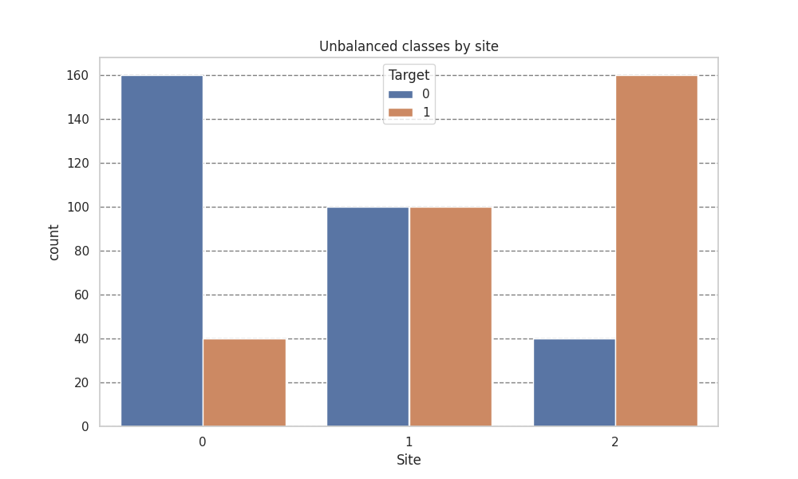
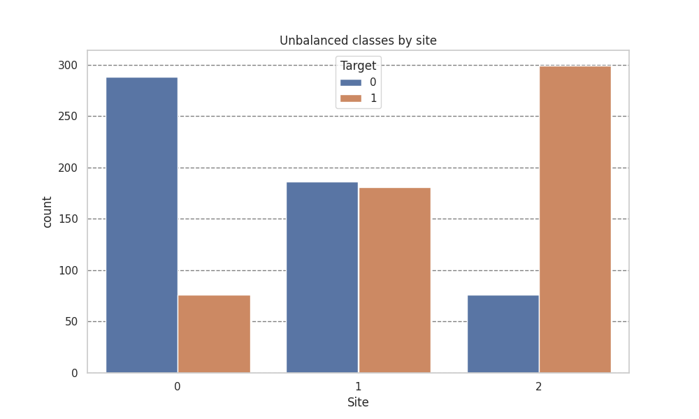
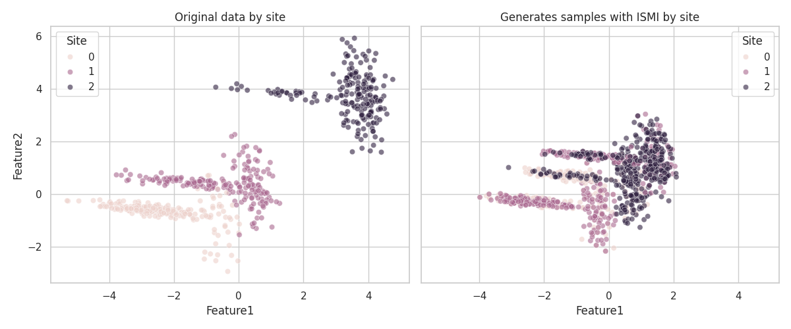

Note
Go to the end to download the full example code.
Multisite Harmonization using Inter-Site Matched Interpolation (ISMI)#
This notebook demonstrates the use of InterSiteMatchedInterpolation for harmonizing multi-site neuroimaging data.
Unlike IntraSiteInterpolation which balances classes within each site independently, ISMI creates synthetic samples by
interpolating between matched subjects across different sites, reducing site-related confounds while preserving biological signal.
Imports#
import matplotlib.pyplot as plt
import numpy as np
import pandas as pd
import seaborn as sns
from uniharmony import verbosity
from uniharmony.datasets import make_multisite_classification
from uniharmony.interpolation import InterSiteMatchedInterpolation
verbosity("warning")
sns.set_theme(style="whitegrid")
Data generation#
Generate Synthetic Multi-Site Data
We create a dataset with 3 sites, simulating a scenario where:
Site A: Younger population, slight class imbalance
Site B: Older population, different feature distribution
Site C: Mixed population, different acquisition protocol
# Generate base dataset
X, y, sites = make_multisite_classification(n_samples=600, n_features=2, n_classes=2, n_sites=3, balance_per_site=[0.2, 0.5, 0.8])
# Simulate site-specific age and sex covariates for matching
site_names = np.unique(sites)
n_per_site = len(X) // len(site_names)
ages = np.concatenate(
[
np.random.normal(50, 20, n_per_site), # Site A: young
np.random.normal(50, 20, n_per_site), # Site B: old
np.random.normal(50, 20, n_per_site), # Site C: mixed
]
)
sex = np.concatenate(
[
np.random.choice(["M", "F"], n_per_site, p=[0.9, 0.1]), # Site A: male-biased
np.random.choice(["M", "F"], n_per_site, p=[0.5, 0.5]), # Site B: balanced
np.random.choice(["M", "F"], n_per_site, p=[0.1, 0.9]), # Site C: female-biased
]
)
# Reshape for the interpolator
categorical_covariate = sex.reshape(-1, 1)
continuous_covariate = ages.reshape(-1, 1)
Plot before harmonisation#
df = pd.DataFrame({"Target": y, "Site": sites})
plt.figure(figsize=[10, 6])
plt.title("Unbalanced classes by site")
sns.countplot(df, x="Site", hue="Target")
plt.grid(axis="y", color="black", alpha=0.5, linestyle="--")

Harmonisation#
Apply Inter-Site Matched Interpolation (ISMI)
We use ISMI with the following configuration:
Mode: pairwise (all site combinations)
Matching: Age (±5 years tolerance) and Sex (exact match)
Alpha: 0.3 (constant) - keeps synthetic samples closer to base site
k: 2 (generate 2 synthetic samples per match)
# Configure ISMI
ismi = InterSiteMatchedInterpolation(
covariate_tolerance=5, # tolerance for age
concatenate=False,
)
# Apply interpolation
X_ismi, y_ismi = ismi.fit_resample(
X, y, sites=sites, categorical_covariate=categorical_covariate, continuous_covariate=continuous_covariate
)
# To maintain compatibility with sklearn and imlearn, sites are stored as attributes
sites_ismi = ismi.sites_resampled_
Plotting after harmonisation#
Visualize Harmonized Data
df = pd.DataFrame({"Target": y_ismi, "Site": sites_ismi})
plt.figure(figsize=[10, 6])
plt.title("Unbalanced classes by site")
sns.countplot(df, x="Site", hue="Target")
plt.grid(axis="y", color="black", alpha=0.5, linestyle="--")

df_orig = pd.DataFrame(X, columns=["Feature1", "Feature2"])
df_orig["Site"] = sites
df_orig["Phase"] = "Original"
df_harm = pd.DataFrame(X_ismi, columns=["Feature1", "Feature2"])
df_harm["Site"] = sites_ismi
df_harm["Phase"] = "Harmonized"
fig, axes = plt.subplots(1, 2, figsize=(12, 5), sharex=True, sharey=True)
sns.scatterplot(data=df_orig, x="Feature1", y="Feature2", hue="Site", alpha=0.6, ax=axes[0])
axes[0].set_title("Original data by site")
sns.scatterplot(data=df_harm, x="Feature1", y="Feature2", hue="Site", alpha=0.6, ax=axes[1])
axes[1].set_title("Generates samples with ISMI by site")
plt.tight_layout()

Conclusion#
This notebook demonstrated InterSiteMatchedInterpolation for multi-site
harmonization. Key findings:
ISMI generates synthetic samples by interpolating between matched subjects across sites, using covariates (age, sex) to ensure biological plausibility.
Alpha reversal efficiently handles bidirectional interpolation without redundant matching (Site A→B with α, Site B→A with 1-α).
Configuration options (k, alpha, mode) allow flexible control over the harmonization process.
Unmatched samples tracking helps identify site pairs with poor overlap.
For real neuroimaging data, ISMI can help reduce site-related confounds while presaging biological signals relevant to the target variable.
Total running time of the script: (0 minutes 1.519 seconds)